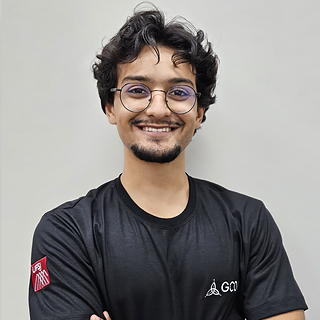

 Universidade Federal de São João del-Rei
Universidade Federal de São João del-Rei
Estudante em Engenharia Elétrica
Universidade Federal de São João del-Rei
Universidade Federal de São João del-Rei
Sou estudante de Engenharia Elétrica na UFSJ e técnico em Eletrotécnica pelo IFMG. Durante minha jornada acadêmica, participei de projetos extracurriculares como a equipe de competição Trem Ki Voa Micro, na organização do Congresso de Engenharias da UFSJ (COEN XII) e atualmente trabalhando em uma iniciação científica na área de Data Driven Control, onde desenvolvi habilidades para resolver problemas complexos e trabalhar em equipe.
Durante minha graduação aprendi a usar ferramentas como Excel, Matlab, Python, SolidWorks, utilizando-as para análise e tratamento de dados, modelagem e resolução de problemas de engenharia, além de técnicas para organização e melhoria como o método Kaizen, matriz SWOT, metodologia 5W2H e plataformas como o Trello.
Busco uma oportunidade para aplicar meu conhecimento técnico e minhas habilidades em projetos desafiadores, contribuindo para soluções inovadoras na área de Engenharia Elétrica.
A Trem Ki Voa Micro é uma equipe de competição que participa da SAE Brasil AeroDesign na classe micro, onde, durante minha trajetória, contribuí para que a equipe alcançasse o 8º lugar em 2023 e o 2º lugar em 2024.
A cada ano a competição exige o projeto e a construção de um VANT rádio-controlado com requisitos de missão específicos, nos anos de 2023 e 2024 fomos desafiados a projetar uma aeronave capaz de decolar de uma mesa de 4 metros, que fosse totalmente desmontável e coubesse em uma caixa de transporte, com pequenas variações nos regulamentos entre as duas edições.
No setor projetávamos e construíamos as superfícies de controle e estabilizadoras da aeronave, para isso utilizávamos conceitos reais de aeronautica, utilizados na industria, além de softwares como SolidWorks para montar um modelo 3D e códigos em Matlab para o projeto, modelagem matemática e análise de dados.
Além das habilidades técnicas, essa experiência me ensinou a trabalhar sob pressão de tempo e a resolver imprevistos de forma ágil. Acima de tudo, aprendi a buscar ativamente o conhecimento, seja por meio da literatura ou procurando orientação com colegas e profissionais mais experientes. Também fui introduzido aos métodos de organização e aprimoramento como Kaizen, SWOT e 5W2H
Você pode me encontrar em: